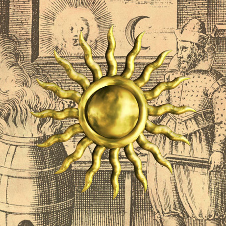

|  |
Discovered by : Known since prehistoric times
Origin : The name is the Anglo-Saxon word for the metal and the symbol comes from the Latin ‘aurum’, gold.
Description :
A soft metal with a characteristic colour and, since it is chemically unreactive, one of the few elements to occur in a natural state. It will dissolve in aqua regia (royal water), a mixture of nitric and hydrochloric acids. It can be beaten into very thin sheets (gold leaf) to be used as architectural ornament. Another use is in jewellery, and some is also employed in the electronics industry and to colour glass or make it reflect heat. About 1500 tonnes of gold are mined each year, chiefly in South Africa and Russia, and most of this is stored as bullion. There is a lot of gold in the sea, but with only about 1-4 grams in 1,000,000 tonnes of seawater, schemes to reclaim gold from the oceans have always failed.
|